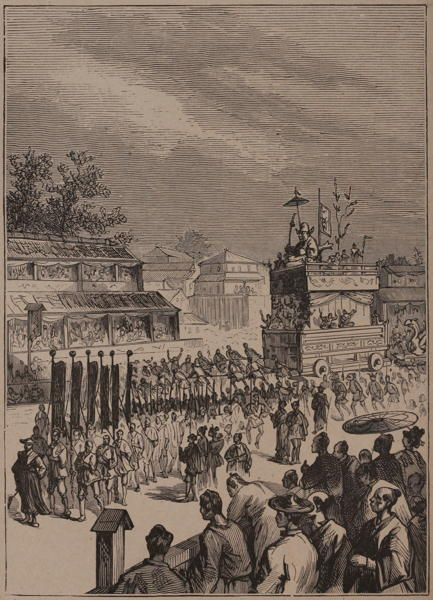

“Religious festival”
Japan: Historical and Descriptive (1877)
I have been this afternoon to see the procession of the sacred ark. A wooden tabernacle, much gilded and adorned, carried on poles by a crowd of laughing natives, and escorted by rather dilapidated-looking priests, clad in white, with high lacquer caps, and in one case followed by two young priestesses. There was much dancing and mirth, and the ark was well shaken, causing all its little bells to tinkle, and much beating of huge drums.
Journal of a Lady’s Travels Round the World (1883)
We witnessed a number of matsuris, or religious festivals in Japan, when all the principal streets were thronged with people, and even the house-tops held their private box-parties. On every such occasion there would appear, in the centre of the thoroughfare, an object that never failed to fill us with amazement. Think of a hundred men pulling madly on two ropes, and drawing thus a kind of car, mounted on two enormous wooden wheels. Resting on this, and rising far above the neighboring roofs, imagine a portable shrine, resembling a pagoda, with roof of gold, and gorgeously decorated with silken tapestries, which are so richly embroidered and heavily gilded as to be valued at many thousands of dollars. This structure had two stories, on each of which were many life-size figures,—some being actual men and women, while others were mere painted statues, hideous and grotesque. Behind this came another car, shaped like a huge bird with crested head. Upon this second vehicle also stood an edifice, three stories high, resplendent with magnificent tapestries and gilded ornaments, and bearing statues of old Japanese deities, so laughably grotesque, that had their surroundings been so rich the whole procession would have seemed a farce. Some of these statues, which were made to open their mouths and wag their heads like puppets, were especially applauded. Men, women, and children rode upon these cars, blowing horns and beating drums. If we had closed our eyes, we might have thought that we were listening to a Fourth of July parade of the “Antiques and Horribles.” What most impressed us was the absence of what we should consider religious feeling. It was a show, a brilliant pageant—nothing more; though, as such, it was heartily enjoyed by thousands.
Japan (1897)
In the morning we had passed through a temple where there was evidently some fête going on, and in the afternoon we met a great wooden car filled with gaily-dressed people. This grotesquely-carved vehicle, which reminded one of the stories of Juggernaut, was dragged along principally by crowds of children. We were told there had been some repairs going on in the temple we had seen in the morning, which had necessitated the removal of an image of its presiding goddess, and the fête was in honour of her return to her usual abode. So many children decked out in bright colours, gave the streets a very gay aspect, the wearers of the holiday attire too, are a much livelier-looking race than the juvenile celestials, who are the gravest little mortals I ever saw.
Letters from China & Japan (1875)
The feast of I-na-ri sama, the “rice-god,” is just over. It lasted three days, and in the temples drums were beaten without cessation. Once during the festival the god I-na-ri was brought out in his car, which was carried by people dressed in fantastic style, who were shouting, singing and dancing. Crowds followed the car, adding to the noise and confusion. If the god was really in the car, he must have been well shaken up, as it was rocked violently and turned almost upside down.
The Sunrise Kingdom (1879)
The greatest festival we have seen this summer was the Ka-wa bi-ra-ki, the “river-opening.” It took place at night, and the display of fireworks attracted thousands of people to Ri-yo-go-ku and Ad-zu-ma Bashi [in Tokyo]. The space between these two bridges was filled with boats ornamented with gay Chinese lanterns; while in the boats people were dancing, singing and playing on samisens, fifes and drums. There was nothing remarkable in the fireworks, but the whole scene was most animated.
Exactly what the meaning of this feast is we cannot ascertain. Some of the people say that it has something to do with a strange superstition concerning a fabulous water-monster, the Kappa, who requires to be periodically aroused or awakened.
The Sunrise Kingdom (1879)
One day, during my walks in Nagasaki, I had an opportunity of seeing some extraordinary processions. The first one I saw consisted of a number of men dressed up as Chinamen, who were supporting a huge dragon, and making it wriggle about in an extraordinary manner. Another procession consisted of little children, some so small that they could hardly walk, who were dressed in the Dutch military costume—cocked hats, tailed-coats with epaulets, dress swords, and everything in the first style, closely resembling Mynheer on gala-days, when the trade of Japan was all his own, and Desima—dear little prison—his abiding place. In this procession, Dutch fraus and frauleins were duly represented, and truth compels me to say that they were never shown off to more advantage. The procession was accompanied by a band, dressed up also in an appropriate manner: they had European instruments, and played European music. The day was fine; thousands of people lined the streets, flags were hung from every window, and altogether the scene was most amusing. I followed the procession through the principal streets, and then up to a large temple situated on the hill-side above the town. Here the infantine troop was put through various military manœuvres, which were executed in a most creditable manner. I was amused at the gravity with which everything was done—each child looked as if it was in sober earnest, and scarcely a smile played on one of the many little faces that were taking part in this mimic representation of the good Dutchmen. The exercises having been gone through, the band struck up a lively air, and the little actors marched away to their homes.
Yedo and Peking (1863)
At a small village on Yesso I happened to see something of a Sintu festival. A vista of temple gate-ways leading to a small shrine was lined with box lanterns eight or ten feet high, supporting similar horizontal ones overhead. Among the countless decorations painted on these paper transparencies, were many representations of the phallus. During the afternoon a procession left the temple bearing the inner shrine. A staff-bearer preceded, followed by a man carrying a stand to receive gifts. Next came two men with sticks, from which hung ornaments of white paper, and after these a drummer, fifer, and cymbal-bearer. Behind these strutted the “god keeper,” fantastically masked with flowing white locks, and a nose six or eight inches long projecting from under a helmet. He wore high stilt-shoes, and bore a large spear in the right hand. Following the god-keeper came a number of retainers leading a caparisoned horse, and bearing spears, bows, and guns, the insignia probably of the priest’s office. Strangely enough, the man who represented the god-keeper was merely a cooly, hired as a substitute; the true priest, if such he may be called, walked behind the procession in civilian’s dress.
Across America and Asia (1870)
The procession was the great event of the [festival] day [at Hakodate]; and the sight of it must have had a curious effect on any European stranger who had witnessed in Catholic countries the long and solemn procession of the Host, of virgins and saints in jewels and embroidery, and of bishops and priests in scarlet and gold brocade. In Japan, and also in China, such parades consist of equal parts of solemnity and buffoonery. In the present case the column was headed by a corps of bonzes, followed by men dressed as harlequins, carrying large banners, pikes, or poles having streamers of feathers, hair, or silk. These men moved forward to very slow time, beat on a drum, which was borne on the back of one man and beat by another following him; and at every step they paused, elevated the knee, jerked out the leg, and pointed the toe, and then brought the foot to the ground. After them came many officers with two swords, dressed in light blue or grey, with the wing-like flaps on their shoulders. A magnificent pavilion, rich in satin, silk, and embroidery, beautifully carved, gilt, and polished, containing various images of deities, and surrounded by bonzes, was borne along by men on poles. Then came another monster pavilion, of the same manufacture, but thickly decorated with devices in copper. On the top of this was seated a figure, a queen in former days, who, in the absence of her lord, marched out against his rebellious subjects, vanquished them, and pacified the country. By her side was standing an old gentleman, her prime minister and adviser. In the body of the car were about a dozen little girls, of about ten or twelve years, dressed in full costumes, and playing on gongs and drums: and behind them several men, playing on fifes, triangles, and clappers. This monster car apparently representing the military body, was drawn by 200 soldiers, in two lines, and harlequins, tumblers, and actors performed all sorts of tricks between the lines of drawers.
The next link in the procession was a junk of polished hard wood, worked with copper, and having a pavilion cabin about fourteen feet high on the deck filled with people. Before these, in front, sat another party of little Japanese damsels playing on drums, and all dressed in blue and rose with gold embroidery, their hair decorated with bunches of flowers or crapes. They were all very pretty children, so gentle in their movements, and yet so full of self-possession that they must have been subject to a long training. As they played they raised, suspended, crossed, and waved their graceful little arms in the air to a chorus of the sounds, Ah! Eh! Hah! repeated over and over again. This junk was drawn by seamen, and was followed like the car by an assemblage of actors, priests, and officers.
A second junk was of the same description in build and decoration, except that its prow was formed of a large phœnix, or some other allegorical bird with green scales on the body, like a dragon. It contained a pavilion like the former, and carried children, musicians, flags, streamers, &c.; its sails, too, were of silk, made in the Japanese manner, of strips laced together, but leaving a space between to let out superfluous wind, and silk embroidery with which these junks and the car were adorned, gave one a high idea of the tastefulness and dexterity of the Japanese women, who I suppose worked them. The figures were those of dragons, tortoises, cranes, toads, butterflies, and other animals which have either a mythological or an allegorical character among the people.
After this junk came a rough plank cart, filled with the productions of the earth; rice, sugar, seaweed, fruits, vegetables, &c. Then followed several cars, representing the different guilds of artisans, and the arts most honoured in Japan, that of the carpenters and joiners being the most conspicuous; and that guild of all others in Japan, certainly merits a presiding deity, for their handicraft is exercised with more skill than in any other part of the globe.
In the evening, stages were erected in the streets, where musicians and dancing-girls performed to a crowded audience, which was by this time in full spirits, and for the first time in Japan I saw natives drunk with saki, and that evening there were not a few in that condition, but perfectly good-humoured.
From what I could understand from a Japanese officer, who was very anxious to explain, this was one of the greatest fêtes in the Japanese calendar; all the gods took a part in it, and all estates and callings of the people were represented in the several portions of the procession. I could not help thinking, if it was displayed on so magnificent a scale in such a small, and till lately insignificant fishing-village, with what splendour must it not have been represented in the capital, at Miako, or in any of the other large towns?
The next morning all the street decorations had been removed, the shops were again filled with boxes, the silks and lacquer ware again removed from them, the peon was again dragging huge stones towards the fort, and Japanese life had returned to its customary routine.
Japan, the Amoor, and the Pacific (1861)
◀ DeathTheater ▶